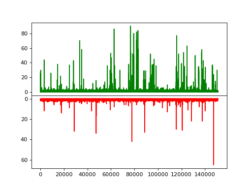
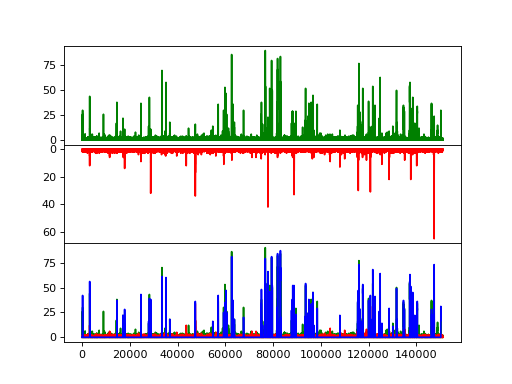

Single Molecule¶
Histogram traces¶
The function tttrlib.histogram_trace can be applied to a event time trace to calculate the time-dependent counts
for a given time window size. In single-molecule FRET experiments such traces are particularly useful to illustrate
single-molecule bursts.
import pylab as p
import numpy as np
import tttrlib
data = tttrlib.TTTR('../../test/data/BH/BH_SPC132.spc', 'SPC-130')
mt = data.get_macro_time()
green_indeces = data.get_selection_by_channel(np.array([0, 8]))
red_indeces = data.get_selection_by_channel(np.array([1, 9]))
fig, ax = p.subplots(2, 1, sharex=True, sharey=False)
p.setp(ax[0].get_xticklabels(), visible=False)
ax[0].plot(tttrlib.histogram_trace(mt[green_indeces], 30000), 'g')
ax[1].plot(tttrlib.histogram_trace(mt[red_indeces], 30000), 'r')
ax[1].invert_yaxis()
p.subplots_adjust(left=None, bottom=None, right=None, top=None, wspace=None, hspace=0)
p.show()
(Source code, png, hires.png, pdf)
{kind=link}
{kind=link}

Above, for a donor and acceptor detection channel a histogram trace for is shown in green and red.
Burst selection¶
The function tttrlib.ranges_by_time_window can be used to define ranges in a photon stream based on time windows
and a minimum number of photons within the time windows. The function has two main parameters that determine the
selection of the ranges besides the stream of time events provided by the parameter time:
- The minimum time window size
tw_min- The minimum number of photons per time window
n_ph_min
Additional parameters to discriminate bursts are:
- The maximum allowed time window
tw_max- The maximum number of photons per time windows
n_ph_max
The the parameters of the C function and the function header are shown below .. note:
void ranges_by_time_window(
int **ranges, int *n_range,
unsigned long long *time, int n_time,
int tw_min, int tw_max,
int n_ph_min, int n_ph_max
)
For a given TTTR object the functionality is provided by the TTTR object’s method get_ranges_by_time_window. A
typical use case of this function is to select single molecule events confocal single-molecule FRET experiments as
shown below.
import numpy as np
import tttrlib
import pylab as p
data = tttrlib.TTTR('../../test/data/BH/BH_SPC132.spc', 'SPC-130')
mt = data.get_macro_time()
tw_ranges = data.get_ranges_by_count_rate(50000, -1, 20, -1)
sel = list()
for start, stop in zip(tw_ranges[::2], tw_ranges[1::2]):
sel += range(start, stop)
sel = np.array(sel)
green_indeces = data.get_selection_by_channel(np.array([0, 8]))
red_indeces = data.get_selection_by_channel(np.array([1, 9]))
fig, ax = p.subplots(3, 1, sharex=True, sharey=False)
p.setp(ax[0].get_xticklabels(), visible=False)
ax[0].plot(tttrlib.histogram_trace(mt[green_indeces], 30000), 'g')
ax[1].plot(tttrlib.histogram_trace(mt[red_indeces], 30000), 'r')
ax[1].invert_yaxis()
ax[2].plot(tttrlib.histogram_trace(mt[green_indeces], 30000), 'g')
ax[2].plot(tttrlib.histogram_trace(mt[red_indeces], 30000), 'r')
ax[2].plot(tttrlib.histogram_trace(mt[sel], 30000), 'b')
p.subplots_adjust(left=None, bottom=None, right=None, top=None, wspace=None, hspace=0)
p.show()
(Source code, png, hires.png, pdf)
{kind=link}
{kind=link}

Above, for a donor and acceptor detection channel a histogram trace for is shown in green and red. In blue the range based selection is shown.